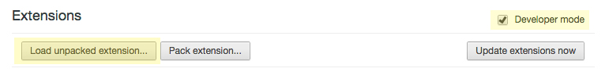
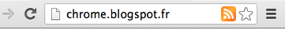
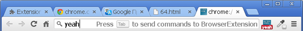

Building Chrome Extensions
Getting Started
chrome://extensions > check Developer mode > Load unpacked extension
 check developer mode > load unpacked extension" />
Icons
If some icon size is not provided, Chrome attempts to use the best size available. However, they must all be equal in height and width.
- 128x128: installation and Chrome Web Store
- 48x48: chrome://extensions
- 16x16: favicon
- 19x19: browser icon
Manifest.json
Tells Chrome what your extension is and what it'll need to work.
- Basic Settings
- manifest_version: version of the manifest file format (Version 1 was deprecated as of Chrome 18, so always use 2)
- default_locale: for internationalization, specifies the subdirectory of _locales
- name: name of extension
- description: summary of what the extension does
- version: used to update users
- author: you
- icons: string of icon filenames
- permissions: which Chrome APIs the extension uses, lets the user know what the extension might affect
-
Background Pages
- Main logic and initialization, bridges together components of the extension
- Persistent page: active all the time
- Event page: triggered only when needed (recommended, saves memory and overall performance)
-
Content Script
- Accesses the current page's DOM
- Matches: determines which pages the content script will be injected into
- CSS/JS: list of files to be injected
{% include_relative manifest.html %}
User Interface
Browser Action
{% include_relative browser_action.html %}
User Interface
Page Action
-
Place an icon inside the address bar, but only shows up when specified (ex: RSS feed). Works very similarly to browser action but can't have pages.

-
You make a page action appear and disappear using the
pageAction.show and pageAction.hide methods, respectively.
-
When you show it, you specify the tab in which the icon should appear. The icon remains visible until the tab is closed or starts displaying a different URL
{% include_relative page_action.html %}
APIs
Must include in permissions to use.
https://developer.chrome.com/extensions/api_index
-
bookmarks
Create, organize, manipulate bookmarks
-
cookies
Query and modify cookies
-
omnibox
Register a keyword with the address bar

-
tabs
Interact with the browser's tabs
-
cookies
Query and modify cookies